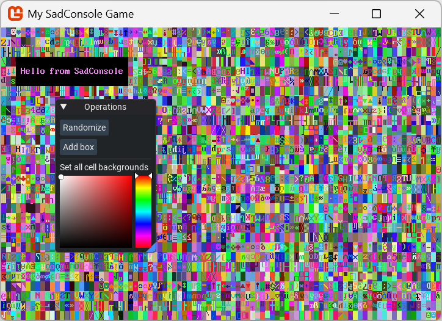

Enable ImGui in SadConsole
Dear ImGui is a bloat-free graphical user interface library for C++ that is designed to be fast, portable, and easy to integrate. It is particularly popular in the game development industry and real-time applications due to its immediate mode GUI paradigm, which simplifies the creation of dynamic user interfaces.
ImGui is supported with SadConsole through the SadConsole.Debug.MonoGame NuGet package. While the package provides a debugger, it also provides a basic ImGui implementation that you can use to render ImGui controls on top of SadConsole.
Please note that ImGui operates in a unique way. It follows a very specific way of designing the UI. Because of the way it works, you can alter most of the ImGui commands without stopping your game. Simply alter the code and use your IDE to hot-reload the code. ImGui instantly responds to the changes.
Use the ImGui GitHub repository to see examples and learn how to use ImGui. ImGui is implemented in C++ so the majority of the examples will be in C++ and you'll have to convert them to C#, which is usually straight forward.
How it's implemented
SadConsole uses the Hexa.NET.ImGui library to provide ImGui functionality. ImGui is implemented as a MonoGame Game Component, which runs both before and after the SadConsole Game Component.
For ImGui to work, it must perform these following steps:
- Update IO state, like the mouse and keyboard.
- Create a new ImGui game frame.
- Create all widgets and UI.
- Generate rendering data.
- Render to MonoGame.
To render your ImGui widgets, you create instances of either SadConsole.ImGuiSystem.ImGuiObjectBase or SadConsole.ImGuiSystem.ImGuiObjectCollection, and add them to the SadConsole.ImGuiSystem.ImGuiMonoGameComponent.UIComponents collection. These types have a method, BuildUI which is where you write all of your ImGui code to draw UI. The instance of ImGuiMonoGameComponent added to MonoGame is available when SadConsole starts.
Add ImGui to your project
To add ImGui to your project:
- Add the SadConsole.Debug.MonoGame NuGet package to your project.
- Add
EnableImGuito the configuration builder. - Use a method callback to add the ImGui objects to the ImGui MonoGame Component.
using SadConsole.Configuration;
Settings.WindowTitle = "My SadConsole Game";
Builder gameStartup = new Builder()
.SetScreenSize(GameSettings.GAME_WIDTH, GameSettings.GAME_HEIGHT)
.SetStartingScreen<SCTesting.Scenes.RootScreen>()
.IsStartingScreenFocused(true)
.ConfigureFonts(true)
.EnableImGui(startupAction: (imguiComponent) => {
imguiComponent.UIComponents.Add(new SCTesting.ImGuiWindow1());
})
;
Game.Create(gameStartup);
Game.Instance.Run();
Game.Instance.Dispose();
The previous code uses the method callback to add an instance of ImGuiWindow1 to the ImGui MonoGame Component. The implementation of ImGuiWindow1 is described in the following section.
Create an object that generates ImGui UI
Derive from SadConsole.ImGuiSystem.ImGuiObjectBase to create a class that's processed by ImGui and draws things to the screen. Override the BuildUI method and make calls to the ImGui API. For example, here's the ImGuiWindow1 class that was used in the previous section:
using Hexa.NET.ImGui;
using SadConsole.ImGuiSystem;
using System.Numerics;
namespace SCTesting;
internal class ImGuiWindow1 : SadConsole.ImGuiSystem.ImGuiObjectBase
{
private Vector3 _clearColor = Color.White.ToVector3();
public override void BuildUI(ImGuiRenderer renderer)
{
if (ImGui.Begin("Operations"))
{
// Run random garbage fill
if (ImGui.Button("Randomize"))
((IScreenSurface)GameHost.Instance.Screen!.Children[0]).Surface.FillWithRandomGarbage(255);
// Add a random box
if (ImGui.Button("Add box"))
{
IScreenSurface surface = (IScreenSurface)GameHost.Instance.Screen!.Children[0];
int x = GameHost.Instance.Random.Next(0, surface.Surface.Width - 10);
int y = GameHost.Instance.Random.Next(0, surface.Surface.Height - 10);
Rectangle area = new(x, y,
GameHost.Instance.Random.Next(5, surface.Surface.Width - x),
GameHost.Instance.Random.Next(4, surface.Surface.Height - y));
ShapeParameters shape = ShapeParameters.CreateStyledBoxFilled(ICellSurface.ConnectedLineThin,
new ColoredGlyph(Color.White.GetRandomColor(GameHost.Instance.Random),
Color.White.GetRandomColor(GameHost.Instance.Random)),
new ColoredGlyph(Color.White.GetRandomColor(GameHost.Instance.Random),
Color.White.GetRandomColor(GameHost.Instance.Random))
);
SadConsole.Instructions.AnimatedBoxGrow box = new(area, TimeSpan.FromSeconds(0.5d), shape);
box.RemoveOnFinished = true;
surface.SadComponents.Add(box);
}
// Color picking control. When the color changes, fill the surface
ImGui.Separator();
ImGui.Text("Set all cell backgrounds");
ImGui.SetNextItemWidth(150);
if (ImGui.ColorPicker3("##clearcolor", ref _clearColor, ImGuiColorEditFlags.NoInputs | ImGuiColorEditFlags.NoSidePreview))
((IScreenSurface)GameHost.Instance.Screen!.Children[0]).Surface.Fill(background: _clearColor.ToColor());
}
ImGui.End();
}
}
This ImGui code generates the following UI:

How to find the MonoGame component
After SadConsole starts and creates the ImGui Game Component, you can retrieve reference to it through the MonoGame Game:
SadConsole.Game.Instance.MonoGameInstance.Components.OfType<SadConsole.ImGuiSystem.ImGuiMonoGameComponent>().First()